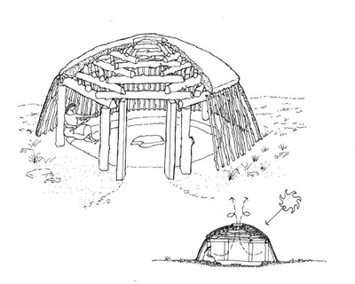

Ya'at'eeh and welcome!
I'm a graduate student at the School of Information Resources and Library Science. I am especially interested in Tribal Libraries, Web Librarianship, Culturual Preservation & Archiving. Click here to read a little bit more about my career experience. You can also email me here!
Here is a link to what I have learned in IRLS 550 so far:
IRLS 550